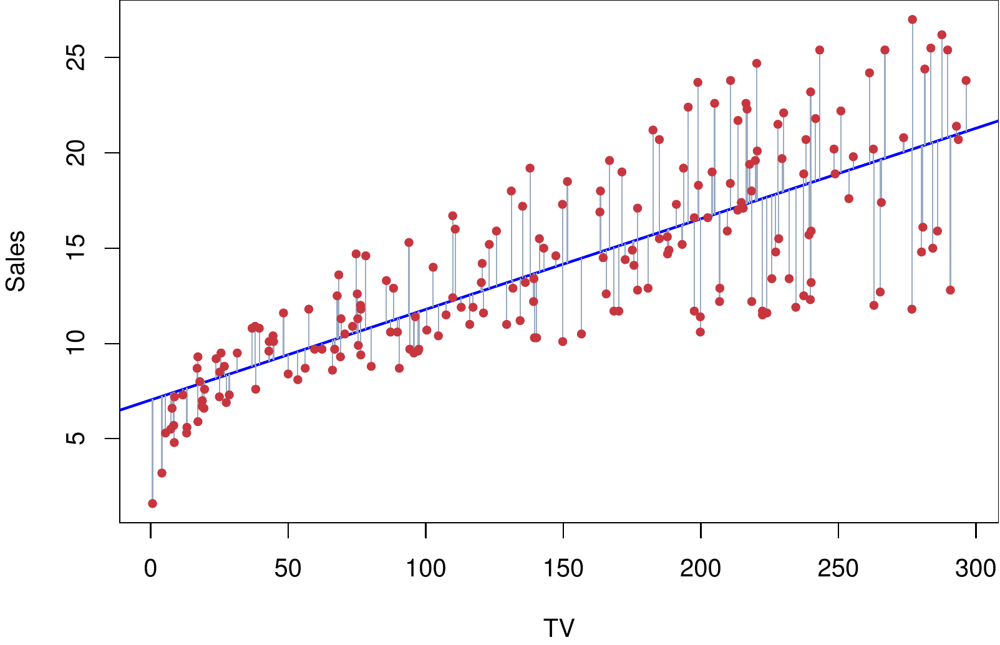
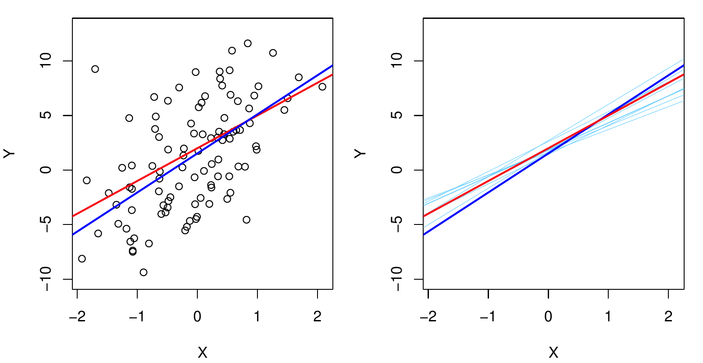
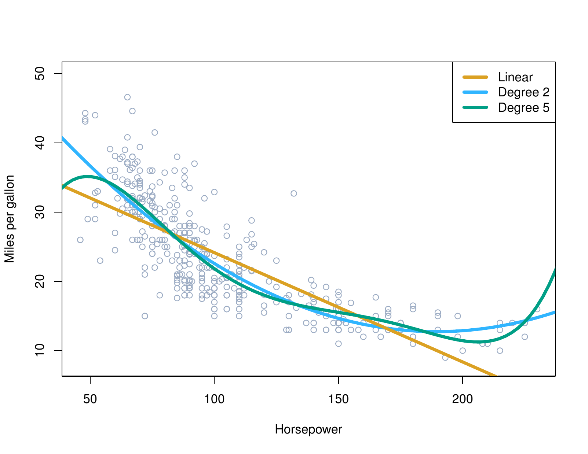
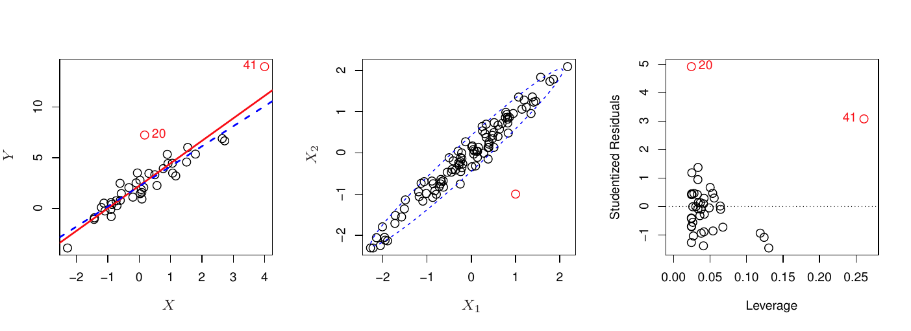
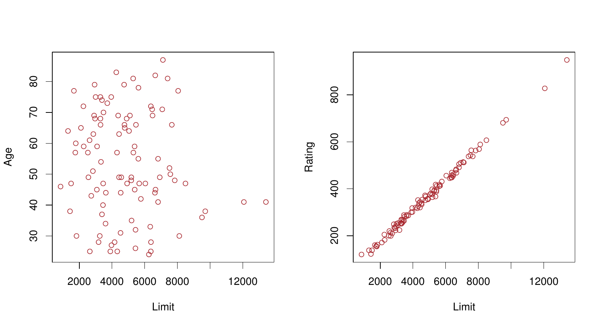
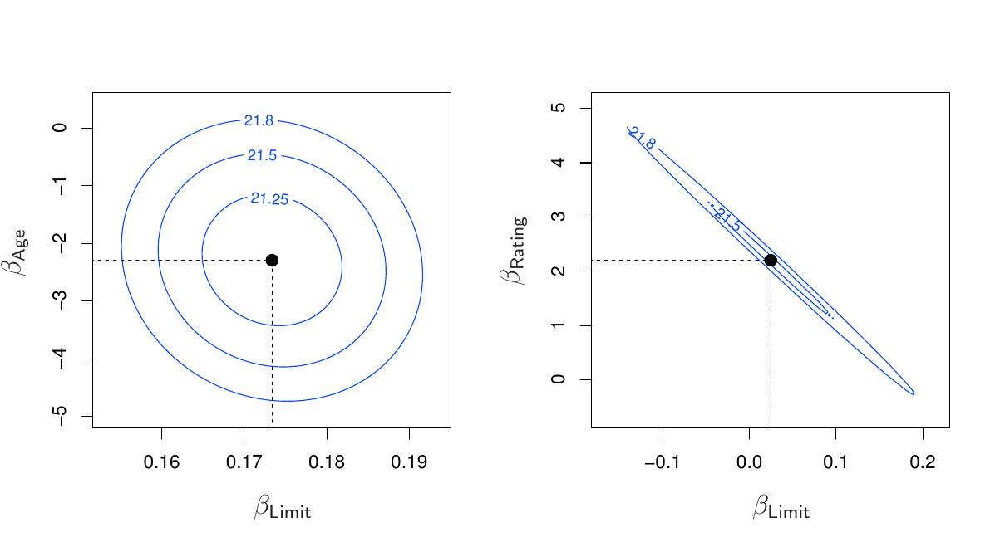

The intercept and the slope, together the straight line part of the model. \(\beta_1\) is the change in \(Y\) associated with a one unit change in \(X\), and \(\beta_0\) is the value of \(Y\) when \(X\) is zero. Both are properties of the population, so we never see them.
Simple linear regression
\[Y = \beta_0 + \beta_1 X + {\require{color}\colorbox{#eec8e1}{$\varepsilon$}}\]
The error term, everything about \(Y\) that \(X\) does not explain. This is the same \(\varepsilon\) from \(Y = f(X) + \varepsilon\) in Meeting 1, and it is still irreducible.
Residuals
The fitted value is \(\hat{y} = \hat{\beta}_0 + \hat{\beta}_1 x\), where a hat means estimated from data. The residual for observation \(i\) is \[\hat{\varepsilon}_i = y_i - \hat{y}_i = y_i - \left(\hat{\beta}_0 + \hat{\beta}_1 x_i\right)\]
Add it over all \(n\) observations. Least squares picks the \(\hat{\beta}_0\) and \(\hat{\beta}_1\) that make this total as small as possible.
Least squares fit

ISLP Figure 3.1. The least squares fit of sales on TV for the Advertising data. Each grey segment is one residual, and the line minimizes the sum of their squares.
Estimates and the truth

ISLP Figure 3.3. Left: the population regression line in red, the least squares line in blue. Right: ten least squares lines, each from its own sample.
Ten samples, ten lines. Which quantity from Meeting 3 is that picture showing?
The vector of \(p + 1\) coefficients, the thing being estimated. \(\mathbf{Y}\) on the left is the vector of \(n\) responses, so this is the whole model for every observation at once.
\(\mathbf{X}^T\mathbf{X}\) is a \((p+1) \times (p+1)\) matrix of sums of products of the predictors with each other, and this is its inverse. If that matrix cannot be inverted there is no least squares estimate at all, which is where Meeting 9 starts.
\(h_i\), the \(i\)th diagonal entry of \(\mathbf{H}\), is the leverage of observation \(i\): how much its own \(y_i\) contributes to its own \(\hat{y}_i\). It grows with the distance of \(x_i\) from \(\bar{x}\), and \(\sum_{i=1}^n h_i = p + 1\).
Promised in Meeting 5. A high-leverage point pulls its own fit toward itself, so its ordinary residual understates how badly the model would have missed it. Dividing by \(1 - h_i\) corrects that by exactly the right amount.
Nothing changes in matrix form. \(\mathbf{X}\) gains columns, \(\beta\) gains rows, and \(\hat\beta = (\mathbf{X}^T\mathbf{X})^{-1}\mathbf{X}^T\mathbf{y}\) is the same formula.
\(\hat\beta_j\) is the change in \(Y\) per unit of \(X_j\) holding the others fixed. What does that describe for Limit and Rating?
Qualitative predictors
A categorical predictor with \(k\) levels enters as \(k - 1\) indicator columns, each 0 or 1. The level left out is the baseline, and every coefficient is read against it.
OneHotEncoder(drop="first") from Meeting 6 is doing exactly this.
Polynomial terms

ISLP Figure 3.8. mpg against horsepower in the Auto data, with a linear fit in orange, a quadratic in blue, and a degree five polynomial in green.
LinearRegression is scikit-learn’s least squares fit. It solves \(\hat\beta = (\mathbf{X}^T\mathbf{X})^{-1}\mathbf{X}^T\mathbf{y}\) for you, through a numerically safer route than forming the inverse.
2
X selects three predictor columns of the Boston data and y is medv, the median home value of a census tract in thousands of dollars.
3
.fit(X, y) estimates the coefficients and stores them on the fitted
object, assigned to fit. An intercept column is added for you, so X should not contain a column of ones.
4
fit.coef_ holds the slopes in the order of X.columns; wrapping it in pd.Series with that index labels them, and the intercept sits separately in fit.intercept_.
The same 10-fold structure as Meeting 5, with a fixed random_state so
both models below see identical folds.
2
The scaled 10-nearest-neighbors pipeline from Meeting 4, so both methods
are scored on the same folds and the two numbers are comparable.
3
cross_val_score with scoring="neg_mean_squared_error" returns negative
MSE, so the leading minus sign turns it back into MSE, and .mean() averages over the ten folds. MSE is bound to that string once above to keep the two calls short enough to read.
(28.21, 18.69)
Three predictors, 506 observations. Which method did you expect to win?
ISLP Figure 3.9. Residuals against fitted values for Auto. Left: mpg on horsepower, with a clear pattern. Right: adding horsepower squared removes most of it.
High leverage points

ISLP Figure 3.13. Observation 41 has high leverage and observation 20 does not. Center: a point unremarkable in \(X_1\) and in \(X_2\) separately, still far from the bulk of the data.
Which of these two does the \(h_i\) from earlier detect?
Collinearity

ISLP Figure 3.14. Credit data. Left: age against limit, not collinear. Right: rating against limit, highly collinear.
Collinearity and the RSS surface

ISLP Figure 3.15. Contours of RSS. Left: balance on age and limit, a well defined minimum. Right: balance on rating and limit, a long narrow valley.
A flat valley means many pairs of coefficients fit almost equally well, so \(\hat\beta\) moves a lot from sample to sample.
Diagnostics for prediction
Non-linearity: matters, since it is bias you can remove
Collinearity: matters, since it is variance in \(\hat\beta\)
Outliers and leverage: matter, since a few rows can move the fit
Non-constant variance and normality: matter for inference, less for the point prediction
We have never once looked at a p-value. Why not?
Application exercise 7
Fit a line and read it, solved the normal equations by hand, watched cross-validated MSE turn around while training MSE fell, computed leverage and checked the LOOCV shortcut, and raced least squares against KNN.
Before Friday
Read ISLP Section 6.1
Problem set 3 due Friday
Adding forty junk predictors lowered training MSE. What should we do about that?